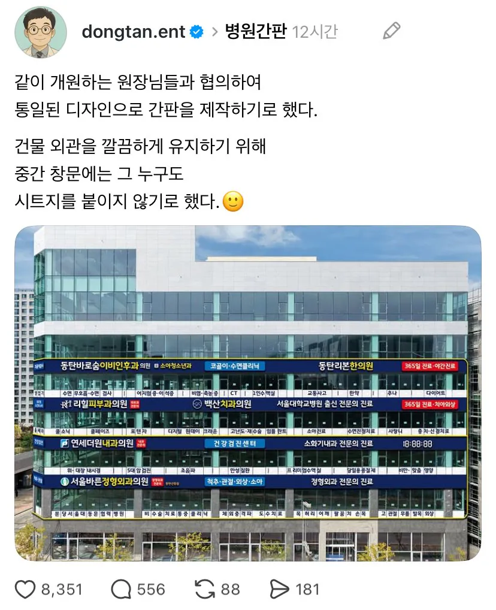

1층에 뭘하면 대박날까..?

1층에 뭘하면 대박날까..?
일단 카페가 있어야됨
1층 건물주 딸이하는 약국 부인이 하는 죽집
약국,의료기기,카페,편의점
건물주 개꿀이겟네
이름도 다 통일하시지
메가커피, 버거킹, 약국
1층 약국 존나 떼돈벌겠네
윗 병원들한테 쓰는돈도 어마어마할걸?
거의 머슴수준으로 살아야 할듯 ㅋㅋㅋ
요샌 건물주한테가지 뭘. 세들어올때 약국 터치금지조건으로 갈걸
저런곳은 중간 층 병원 옆에 약국이 생기더라
메디컬 빌딩 1층은 약국이 국룰
저런 건물은 건물주 본인 혹은 자식들이 약대 나와서 약국 독점함
입주 의사들 처방전에 "내려올만한" 약들이랑 상비약만 딱 챙겨놔서
로비 이빨도 안박히고 재고관리도 존나 잘됨
왠만한 주거단지 인근 상가마다 하나씩 있고
그 동네 사람들은 다 거기가 대형병원이라 생각하고 거기 다님
와.....작은 대형병원이라고 해야하려나... 좋다.
1층은 약국과 약국과 까페겠네.
건물주 기분굿.
메디컬 건물주 특 아들 약사임
1층엔 약국, 카페, 토스트집이나 배달 맛집 있으면 장사 잘될겨
시체도 살아나서 나오겠네
본죽 하나 넣으면...ㄷㄷ
카페 본죽 약국 편의점
그냥 대형병원이라고 생각하면 될 듯
협진돼면 완전 대학병원인데
약국(반드시 1개 및 이권 판매), 고급 브랜드 카페, 패스트푸드(메인 3사)
약국, 죽집
건물주가 제일 부럽다...
검색해보니까 1층 이마트에브리데이 , 고기집 , 텐퍼센트 카페 , 김밥집 , 대형약국 이렇게 입점이라는데
카페 편의점 김밥집 약국 등등 뭐 하나 차려도 대박나겠다
복싱장
와 깔끔해
죽집하면 갈리괬는데
반대로 약사가 건물주인 경우도 있다 ㅋㅋㅋㅋㅋㅋ
은행 약국 카페 정도
메디슨타워 좋지
1층에 약국, 편의점, 카페...... 그리고 이삭토스트같은 샌드위치 가게정도 들어올듯
1층 최소 절반은 약국해서 페이약사 4~5명 쉴새없이 돌아가야지 뭐
약국은 약사 아니면 개업 못하나?
건물주가 개업하고 페이약사 고용해서 쓰는거 안됨?
요새 동네에도 대형 창고형약국 생기던데 젊은 약사들이 편의점 알바처럼 조빠지게 일하는거 보니 신기하더라
약국 까페 죽집 던킨도넛
약국, 죽집
이야
저기 간호사들 사먹을 떡볶이집 있어야함
카페 무조건 있어야지 수시로 8잔 10잔씩 대량주문할텐데ㅋㅋㅋㅋㅋㅋ
프랑스 전통 빵집 뭐 그런거 존나 비싸게 팔면 보릉보릉 달려올듯.
1층 키즈카페 ㅈㄴ생겨서 경쟁 심할 듯 아니면 점심식당
1층 약국 건물주냐?
종합병원처럼 연합해서 인프라 통합하면 어떨까
닥치고 약국, 본죽, 편의점이지